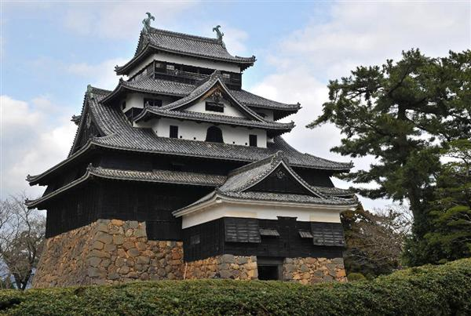
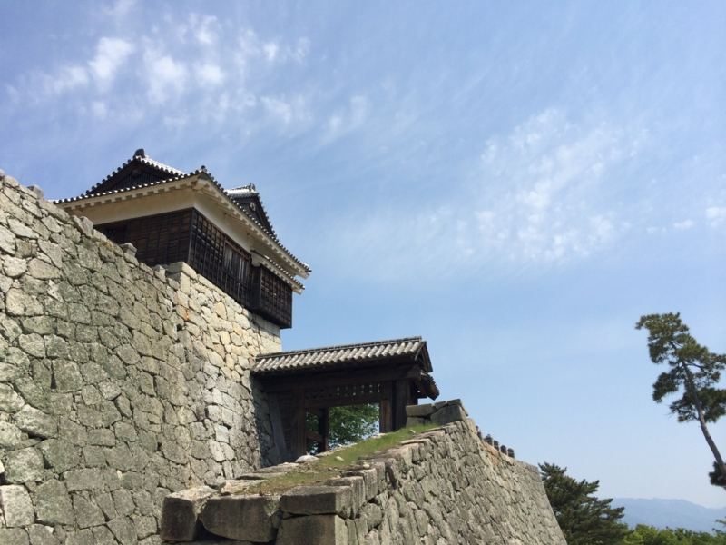

現存12天守のひとつなのに、松山城が国宝じゃないのってなんでなんだろう
公開日：

文化審議会（宮田亮平会長）は１５日、江戸時代初めに築かれた松江城天守（松江市）を国宝に、現在は東京都庭園美術館として利用されている旧朝香宮邸（東京都港区）など９件の建造物を新たに重要文化財に指定するよう、下村博文文部科学相に答申した。山梨県甲州市の山村集落を重要伝統的建造物群保存地区に選定することも求めた。
おめでとうございまするー！ この前しまなみ海道に行ってから、やまなみ街道というのがあり、そのまま松江まで行けると知って、行きたいなーと思ってたのだけど、これを機に観光客増えちゃうかな？
松江城は関ケ原の合戦の後、出雲・隠岐の領主になった堀尾氏が築城。１６１１年に完成した天守は、２階分の長さの通し柱を多用するなど独自の特徴があり、近世城郭の最盛期を代表する建築と評価された。現存する天守の国宝指定は松本城（長野県）、犬山城（愛知県）、彦根城（滋賀県）、姫路城（兵庫県）に続き５例目。
あと、日本三大湖城の一つってのもポイントらしいです。
わしは日本史にはそれほど詳しくないので、詳しいことはほかの人に聞いてみてください。
松山城も国宝にしろください
――さてさて。
現存12天守のひとつなのに、松山城が国宝じゃないのってなんでなんだろう
— CH3COOH(さくさん) (@ch3cooh) 2015, 5月 16焼き鳥が呟いていたこの疑問、自分も気になっていたので調べてみました。
実を言うと、松山城はすでに国宝です。……とはいえ、旧国宝ですが。
「国宝」という語の指す意味は文化財保護法施行（1950年（昭和25年））以前と以後とでは異なっている。文化財保護法施行以前の旧法では「国宝」と「重要文化財」の区別はなく、国指定の有形文化財（美術工芸品および建造物）はすべて「国宝」と称されていた。
そして、
これらの指定物件（いわゆる「旧国宝」）は文化財保護法施行の日である1950年（昭和25年）8月29日付けをもってすべて「重要文化財」に指定されたものと見なされ、その「重要文化財」の中から「世界文化の見地から価値の高いもの」で「たぐいない国民の宝」たるものがあらためて「国宝」に指定されることとなった。
つまり、国宝には戦前に指定された「旧国宝」（今は重要文化財）と、戦後、そのなかから特別にスペシャルなものを選り抜いた“超国宝”ともいうべき「現国宝」があるわけですねー。松山城は（旧）国宝だったけれど、今は重要文化財というのが正しいようです。国宝から重要文化財になったのは一見格下げですが、格（？）としては変わりはありません。
ちなみに、（現）国宝から重要文化財へ格下げされた例はないとのこと。けれど、松山城では戦前、放火によって旧国宝の建物数棟が消失し、国宝指定を解除されている例もあります。もしなんらかの理由で損なわれれば、重要文化財の指定は解除されちゃうかも。大事にしなきゃデスネ。
あと、重要文化財から国宝への格上げはとても難しいらしいです。
今回の松江城の場合、正確な築城年が分からないのがネックだったようです（この辺りはクリアされたのでしょうか？）。明治の廃城令によって存城処分（陸軍省所管）となり、天守以外の建物がすべて払い下げられ、撤去されてしまったのも痛いかも。松山城みたいに櫓や門が残っているわけでなく、現在は復元に取り組んでいるようですね。
また、市民の後押しも重要とのこと。松江では昭和30年代から陳情を続けていて、2007年（平成19年）から4か年かけて「松江開府400年祭」を開くなど、運動を盛り上げていたようですね。国宝の指定選考は非常に厳しく、「1967年（昭和42年）に法隆寺綱封蔵が指定されて以後、国宝建造物の新規指定は30年間にわたり行われていなかった」ほど。継続的にプッシュして、学術調査を行ったり、保存に関する取り組みを強化していかないと、認定されるのは難しそう。

松山城の場合、築城年などについては明らかですが、建造時に五層であった天守が三層に改築されている点、さらに一度落雷で焼け落ち、幕末期（安政元年）に再建された（国防のために特例で許されたとか）せいで築年数が浅い＆設計が築城時と異なるというのがネックになりそうです。
ただ、調べてみたところ、国宝（建物）のなかで一番歴史が浅いのは宇佐神宮の上宮本殿（1860年、万延元年）とのこと。松山城の大天守再建（1854年、安政元年）よりも新しい国宝がないわけではないので、市民の後押しを得て、しっかりと学術的に価値があることを立証できれば、国宝指定の目もないわけではないのかもしれません。